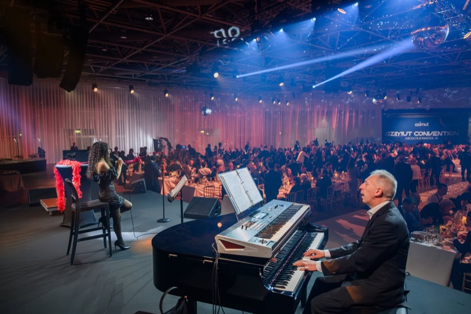

INCD STUDIO › Servizi › Consulenza musicale
Consulenza musicale per artisti e aziende
Affianchiamo musicisti, band, cantautori e aziende con un supporto creativo, tecnico e strategico: dall'idea al progetto finito, con un unico interlocutore e un metodo su misura.
Per artisti e musicisti
- Sviluppo dello stile e scelta del repertorio
- Arrangiamenti e trascrizioni originali: per esempio i Šostakovič arrangiati per il Pocket Symphony International Ensemble, le arie del Barbiere di Siviglia per fagotto e viola, il Piazzolla per viola e fisarmonica di «Le Grand Tango»
- Preparazione di un progetto discografico: organico, registrazione, mix, master, grafica, stampa e distribuzione digitale
- Preparazione di concerti e presentazioni dal vivo, anche con riprese video
Per aziende, brand e associazioni
- Colonne sonore, jingle e identità sonore per comunicazione, marketing ed eventi
- Musica originale per sfilate, presentazioni e convention
- CD e contenuti musicali da regalare a clienti e collaboratori, anche con finalità solidali (formula «Music for Life»)
- Concerti ed eventi musicali su misura

Abbiamo lavorato, tra gli altri, per British Airways, Coface, Spencer Stuart, ACTN1 (Milano Fashion Week), Lloyd Italico, Fondazione Don Carlo Gnocchi, Cordenons e Carano 4 Children.
Chi ti segue
Luca Maggioni segue la consulenza e la progettazione di tutti i servizi. Danilo Radice è responsabile dello studio e delle registrazioni live per tutto quello che riguarda la parte tecnica.
Ascolta e guarda


Domande frequenti
La consulenza musicale è rivolta solo ai professionisti?
Assolutamente no. Lavoriamo con musicisti professionisti e amatori, artisti emergenti, solisti, band, ensemble, cori, associazioni e aziende. Ogni progetto ha caratteristiche ed esigenze proprie: il nostro compito è comprenderle e individuare il percorso più adatto, indipendentemente dal livello di esperienza o dalla dimensione del progetto.
Posso richiedere soltanto un servizio specifico, come un arrangiamento, una registrazione o un mastering?
Certamente. Puoi affidarci l'intero progetto, dalla prima idea alla realizzazione finale, oppure richiedere un intervento mirato in una singola fase. Mettiamo a disposizione le nostre competenze in modo flessibile, in base alle tue necessità.
Realizzate anche produzioni discografiche per aziende e progetti solidali?
Sì. Abbiamo maturato esperienza nella realizzazione di produzioni musicali per aziende, eventi istituzionali e iniziative a sostegno di progetti sociali. Tra le nostre realizzazioni figurano il CD per l'inaugurazione della British Airways Galleries Lounge di Milano Linate, le produzioni legate ai concerti per i vent'anni di Coface e i dischi della collana Music for Life, destinata a sostenere iniziative sociali attraverso la musica.
È possibile ricevere una consulenza prima di decidere come realizzare il progetto?
Certamente. È proprio uno degli aspetti centrali del nostro lavoro. Possiamo analizzare insieme la tua idea, valutare le possibilità artistiche e tecniche, definire le modalità di realizzazione e individuare tempi e costi prima di avviare la produzione.
Come si comincia?
È sufficiente raccontarci la tua idea. Puoi scriverci a info@incd.it, telefonare o contattarci su WhatsApp al +39 320 436 4489. Ci confronteremo sulle caratteristiche del progetto e, se necessario, fisseremo un primo incontro per valutare insieme come procedere.